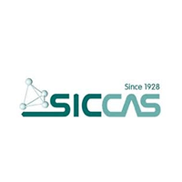

闭环成果
过电位 · η OER
−53mV
288.9→235.9↓18%
理论节电
≈1.4
kWh/kgH₂
稳定运行
1000h
高电流连续运行
活性保持
98.6%
无显著衰减
价值和挑战
绿色制氢核心技术OER 性能决定电解水制氢效率与成本，是产业链关键瓶颈。
科学空间巨大材料组合空间超 1015，传统经验试错方法难以覆盖。
实验成本高合成—测试链条漫长复杂，单次物理实验成本高昂且耗时。
数据极度稀缺高质量、标准化电化学数据稀缺，难以支撑底层模型训练。
AI 干湿协同闭环
/01 DRYAI 设计
/02 WET自动合成
/03 READ自动测试
/04 DATA数据回传
/05 ITER模型进化
封闭式合成-测试一体站
OER-L04 ITERATIONLoading Model
SYSTEM STATE: NOMINAL
TEMP: 298.15 K
PRESSURE: 1.0 ATM

Partner Institution
中国科学院上海硅酸盐研究所
Shanghai Institute of Ceramics, CAS · SICCAS